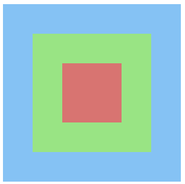

为 HTML 页面指定标签绑定指定事件，可以通过以下三种方式实现:
DOM 提供了事件监听器，可以同时绑定多个事件，并且具有多个事件处理函数。具体监听器语法如下:
element.addEventListener(eventName, functionName, boolean)该方法的参数说明如下:
| 参数 | 说明 |
|---|---|
| eventName | 为元素指定具体的事件名称（例如单击事件是 click 等） |
| functionName | 绑定事件的处理函数 |
| boolean | 设置事件是捕获阶段还是冒泡阶段。为 false 时为冒泡阶段，一般都是这个值 |
我们可以通过以下代码进行学习:
var btn = document.getElementById('btn');
btn.addEventListener('click',function(){
console.log('你终于点中了我...');
},false);addEventListener() 方法还可以为指定一个元素绑定一个事件同时具有多个处理函数。如下代码示例:
var btn = document.getElementById('btn');
btn.addEventListener('click',function(){
console.log('你终于点中了我...');
},false);
btn.addEventListener('click',function(){
console.log('你终于又点中了我...');
},false);上述代码执行的结果如下:
你终于点中了我...
你终于又点中了我...通过 addEventListener() 方法绑定事件，可以同时执行两个处理函数的逻辑。
IE 8 及之前的版本浏览器并不支持 addEventListener() 方法，而提供了如下方法实现:
element.attachEvent(eventName, functionName)该方法的参数说明如下:
| 参数 | 说明 |
|---|---|
| eventName | 为元素指定具体的事件名称（例如单件事件是 onclick 等） |
| functionName | 绑定事件的处理函数 |
值得注意的是:
attachEvent()方法的 eventName 参数与addEventListener()方法的 eventName 参数不同。
我们可以通过以下代码进行学习:
var btn = document.getElementById('btn');
btn.attachEvent('onclick',function(){
console.log('你终于点中了我...');
},false);我们可以封装一个函数专门来解决事件监听器的浏览器之间兼容问题。具体代码示例如下:
function bind(elem, event, callback){
// 判断是否存在 addEventListener
if (elem.addEventListener){
elem.addEventListener(event, callback, false);
}else{
elem.attachEvent('on' + event, callback);
}
}在事件的处理函数中，可以通过 this 关键字来指代绑定该事件的标签。
var btn = document.getElementById('btn');
btn.addEventListener('click',function(){
console.log(btn.textContent)
},false);上述代码可以使用 this 关键字进行改写:
var btn = document.getElementById('btn');
btn.addEventListener('click',function(){
console.log(this.textContent)
},false);通过 addEventListener() 方法为 HTML 页面的标签绑定事件时，this 关键字指代绑定该事件的标签元素。
var btn = document.getElementById('btn');
btn.addEventListener('click',function(){
console.log(this);
},false);上述代码示例运行的结果如下:
<button id="btn" class="btn btn-primary">事件监听器</button>通过 attachEvent() 方法为 HTML 页面的标签绑定事件时，this 关键字指代绑定 window 对象。
var btn = document.getElementById('btn');
btn.addEventListener('click',function(){
console.log(this);
},false);上述代码示例运行的结果如下:
[Object window]由于在 addEventListener() 方法中的 this 和在 attachEvent() 方法中的 this 指代不同，我们需要进一步优化我们的兼容方案。
function bind(elem, event, callback){
// 判断是否存在 addEventListener
if (elem.addEventListener){
elem.addEventListener(event, callback, false);
}else{
elem.attachEvent('on' + event, function(){
callback.call(elem);
});
}
}值得注意的是: 使用
addEventListener()方法中的 this 和在attachEvent()方法中的 this 是没有上述问题的。
HTML 页面的标签绑定事件的处理函数中，提供了一个事件对象（event）。这个事件对象会返回关于该事件的信息，以及该事件绑定在哪个元素中。
事件对象是以事件的处理函数中的参数形式出现，并不需要我们自己创建，直接使用即可。
element.addEventListener(eventName, function(event){
// event 就是事件对象
}, boolean)使用 DOM 标准的事件绑定时，Event 事件对象在 IE 8 及之前的版本浏览器情况有所不同。
var btn = document.getElementById('btn');
btn.onclick = function(event){
console.log(event)
}var btn = document.getElementById('btn');
btn.onclick = function(event){
console.log(window.event)
}想要实现 Event 事件对象的兼容，我们可以在事件的处理函数中添加以下代码:
event = event || window.event;Event 事件对象提供了 target 属性用于获取触发事件的目标元素（标签）。
我们可以通过以下案例进行学习 target 属性:
<!DOCTYPE html>
<html>
<head>
<meta charset="UTF-8">
<title>事件的目标元素</title>
</head>
<body>
<ul id="ul" class="list-group">
<li class="list-group-item"><a href="#">链接</a></li>
</ul>
</body>
<script type="text/javascript">
var ul = document.getElementById('ul');
ul.addEventListener('click',function(event){
console.log(event.target)
},false);
</script>
</html>上述 HTML 页面运行效果如下:
如果点击 <a> 标签，target 属性则打印 <a> 标签:
<a href="#">链接</a>如果点击 <li> 标签，target 属性则打印 <li> 标签:
<li class="list-group-item"><a href="#">链接</a></li>如果点击 <ul> 标签，target 属性则打印 <ul> 标签:
<ul id="li" class="list-group">
<li class="list-group-item"><a href="#">链接</a></li>
</ul>IE 8 及之前的版本浏览器不支持 target 属性，而是提供了 srcElement 属性进行替换。
所以，上述示例代码在 IE 8 及之前的版本浏览器中，应该是如下代码:
var ul = document.getElementById('ul');
ul.addEventListener('click',function(event){
console.log(event.srcElement)
},false); 如果提供兼容解决方案的话，我们可以在事件的处理函数中加入如下代码:
var target;
if (event.target){
target = event.target;
}else{
target = event.srcElement;
}或者如下代码:
var target = event.target || event.srcElement;HTML 页面的一些标签具有默认行为。所谓默认行为，就是不用编写 JavaScript 代码就可以实现的动态效果。例如如下标签:
<a> 标签: 用户点击 <a> 标签，会发生页面跳转行为。<form> 标签: 用户点击表单的提交按钮，表单会发生提交行为。阻止默认行为，就是不让 HTML 页面这些标签的默认行为发生。想要阻止默认行为可以通过 Event 事件对象提供的属性实现:
想要提供兼容方案，可以使用如下代码实现:
if (event.preventDefault){
event.preventDefault();
}else{
event.returnValue = false;
}当 HTML 页面中标签绑定的事件被触发时，我们还可以通过 Event 事件对象获取鼠标当前的坐标值。
我们可以通过以下案例测试上述几组坐标效果:
除了上述几组鼠标坐标以外，Event 事件对象还提供了一组有关鼠标坐标的属性:
我们可以通过以下案例测试上述坐标效果:
还记得 addEventListener() 方法的第三个参数吗？这个参数表示是捕获阶段还是冒泡阶段。根据 W3C 标准事件的发生流程可以分为捕获阶段、触发阶段以及冒泡阶段。
通过以下代码示例，我们可以测试事件的捕获阶段:
<!DOCTYPE html>
<html>
<head>
<meta charset="UTF-8">
<title>事件周期</title>
<style>
#d1, #d2, #d3 {
cursor: pointer;
}
#d1 {
width: 300px;
height: 300px;
position: relative;
background: lightskyblue;
}
#d2 {
width: 200px;
height: 200px;
margin: 50px;
position: absolute;
background: lightgreen;
}
#d3 {
width: 100px;
height: 100px;
margin: 50px;
background: lightcoral;
}
</style>
</head>
<body>
<div id="d1">
<div id="d2">
<div id="d3"></div>
</div>
</div>
</body>
</html>上述 HTML 页面运行的效果如下:

如果 addEventListener() 方法的第三个参数值为 true，表示捕获阶段:
var divs = document.getElementsByTagName('div');
for (var i=0;i<divs.length;i++){
divs[i].addEventListener('click',function(){
alert(this.id);
},true);
}如果 addEventListener() 方法的第三个参数值为 false，表示冒泡阶段:
var divs = document.getElementsByTagName('div');
for (var i=0;i<divs.length;i++){
divs[i].addEventListener('click',function(){
alert(this.id);
},false);
}值得注意的是: IE 8 及之前版本的浏览器不支持捕获阶段。
如果在上述示例中的冒泡阶段，我们可以看到事件会从最底层节点向上传播。如果只想触发当前节点的事件，而不继续向上冒泡，我们可以通过 Event 事件对象提供的属性来完成:
想要提供兼容方案，可以使用如下代码实现:
if (event.stopPropagation){
event.stopPropagation();
}else{
event.cancelBubble = true;
}在讨论什么是事件委托之前，我们先来看一个示例:
<div class="container">
<button id="btn" class="btn btn-primary">添加</button>
<ul id="parent" class="list-group">
<li class="list-group-item"><a href="#">链接</a></li>
<li class="list-group-item"><a href="#">链接</a></li>
<li class="list-group-item"><a href="#">链接</a></li>
</ul>
</div>我们为上述页面的 <a> 标签绑定 onclick 事件:
var allA = document.getElementsByTagName('a');
for (var i=0;i<allA.length;i++){
allA[i].onclick = function(){
alert('我是一个链接.')
}
}当动态为 <ul> 标签添加子标签 <li> 时，如下代码:
var btn = document.getElementById('btn');
btn.onclick = function(){
var ul = document.getElementById('parent');
var li = document.createElement('li');
li.setAttribute('class','list-group-item');
li.innerHTML = '<a href="#">链接</a>';
ul.appendChild(li);
}我们会发现，新添加的选项的 <a> 标签并没有 onclick 事件。如果我们想为新添加的 <a> 标签同样绑定 onclick 事件，需要在添加之前就完成事件绑定。
除了上述方式可以解决这个问题之外，我们还可以将事件绑定到所有 <a> 标签共有的祖先元素上。
ul.onclick = function(event){
if (event.target.nodeName === 'A'){
alert('我是一个链接.')
}
}这种将事件绑定其祖先元素的方式，我们可以称之为事件委托。
本笔记的内容免费开源，任何人都可以免费学习、分享，甚至可以进行修改。但需要注明作者及来源，并且不能用于商业。
本笔记采用知识共享署名-非商业性使用-禁止演绎 4.0 国际许可协议进行许可。